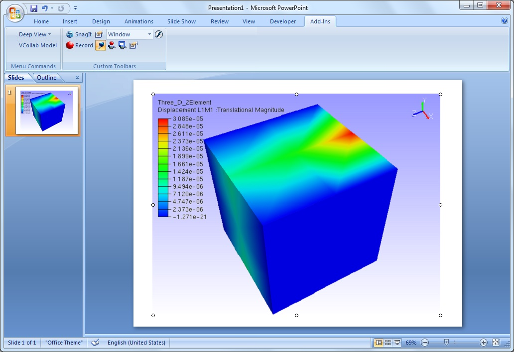

Set As Image
The Set As Image option helps the user to set the current view as default display image for the embedded presenter control.
While embedding presenter control in any Microsoft office tools, embedded control in which the CAX model is loaded, displays the first user defined view point or standard view of the loaded model.
To change this display view, users can use this option. This command sets the current view as a control display image in offline mode.
This command is applicable, only for embedded presenter control objects in Microsoft office applications.
Steps to set current view as object image
- Embed VCollab control into PowerPoint or any other Microsoft office tools.
- Load a CAX model, using the File menu.
- Click outside the presenter control.
- Control becomes an object which displays the standard front view of the model.

- Click VCollab Control Object | Edit to get into the viewer.
- Transform the model. (either a rotation or translation or both)
- Click outside the control window.
- Still the control displays standard front view of the model in offline mode as above.
- Click VCollab Control Object | Edit to get into the viewer again.
- Transform the model to get the required view.
- Right click to open the context menu.
- Select Set as Image.

- Click outside the control window and notice the change.

- User defined view is set as an image to the object or control.
- Save the presentation.
Note: While reopening the presenter in active mode, view position of the captured image is applied, but not its view states.